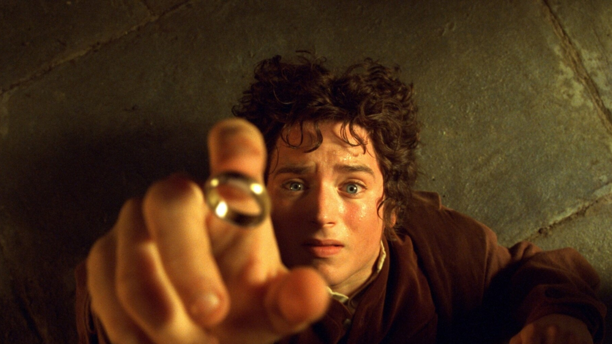

Personajes de ardA

GANDALF
Conocido tambien bajo el nombre elfico Mithrandir, miembro de la Comunidad del Anillo.

FRODO BOLSON
Portador del Anillo Único y la Luz de Earendil, miembro de la Comunidad del Anillo.
SAM GAMYI
Compañero de Frodo Bolson durante la Guerra del Anillo y miembro de la Comunidad del Anillo.
Paisajes de ardA

RIVENDEL
Conocida tambien bajo el nombre de Imladris, hogar del Señor Medio Elfo Elrond.

ISENGARD
Conocida tambien bajo el nombre de Orthanc, guarida del Mago Blanco Saruman.

HOBBITON
Conocida tambien bajo el nombre de Bolson Cerrado, cuaderna del Este.